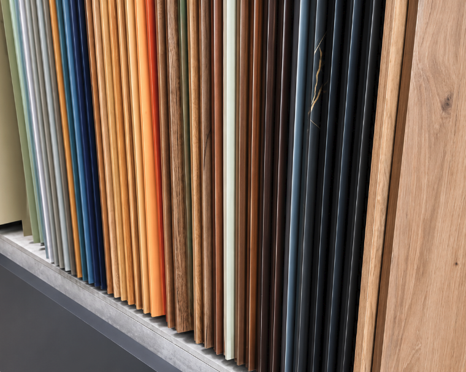
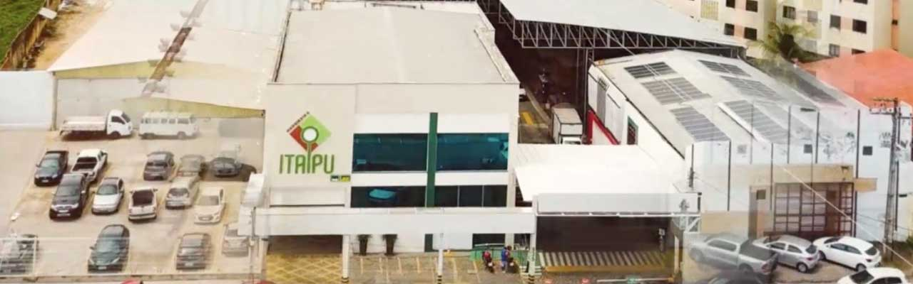

A MADEIREIRA QUE É PAU PRA TODA OBRASeja exclusivo,
Seja exclusivo,
seja único,
seja Itaipu.
Materiais e soluções para transformar seu projeto em realidade. Da escolha do MDF ao cuidado com o acabamento.
Com você em Fortaleza, desde 1985.

TEXTURAS QUE INSPIRAMO começo de novas possibilidades.
MADEIREIRA ITAIPU — FORTALEZA, CE01 Variedade em materiais02 Serviços para marcenaria03 Atendimento próximo
ENCONTRE SUA MATÉRIA-PRIMAUma escolha para
Uma escolha para
cada projeto.
Conheça nossas linhas de produtos.
Os detalhes e o orçamento? A gente conversa.
MARCAS QUE VOCÊ CONHECEConheça as marcas ↗
ALÉM DOS MATERIAISSeu projeto.
Seu projeto.
Nosso cuidado
em cada detalhe.
Conte com a Itaipu também na preparação e no acabamento dos seus materiais.
Conheça nossos serviços ↗01020304
Corte e plano de corte
Organização e aproveitamento das chapas para dar o próximo passo no seu projeto.
Colagem de bordas
O acabamento que faz a diferença nos detalhes dos seus móveis.
Usinagem em MDF
Furos, rasgos e rebaixos de acordo com a necessidade do seu projeto.
Entrega
Mais praticidade para receber seus materiais. Consulte regiões, condições e prazos.

PARANGABA · FORTALEZALOJA FILIAL · FORTALEZA
RAÍZES FORTES. NOVAS POSSIBILIDADES.Faz parte da nossa
Faz parte da nossa
história fazer parte
da sua.
Desde 1985, a Madeireira Itaipu está presente em Fortaleza, oferecendo produtos e serviços para quem trabalha com madeira e marcenaria.
Conheça a Itaipu ↗VAMOS CONVERSAR?Seu próximo projeto